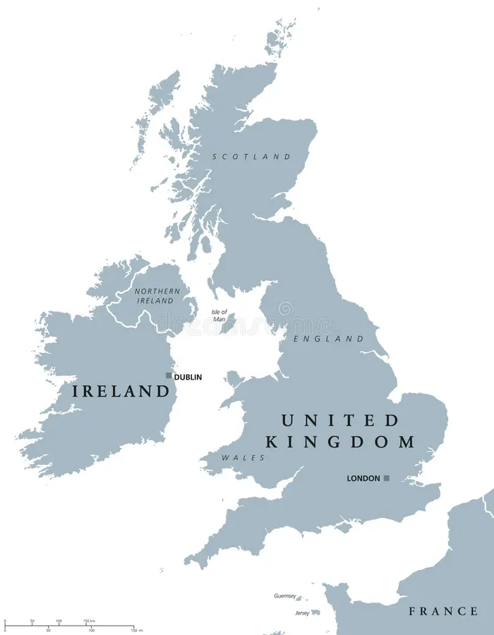

This is Europe. If you are here to plan your vacation, you most likely know the country London is in. Yep, its the United Kingdom. Let's take a closer look.

Here's the U.K. You can see London appears on the south-east side near France. London runs alongside the river Thames and has many bridges stretching across, including the London Bridge. London is in a basin, with hills surrounding and lower land inside. Alright.. fact time is over! Head over to the "Visit" page for more information about travelling.